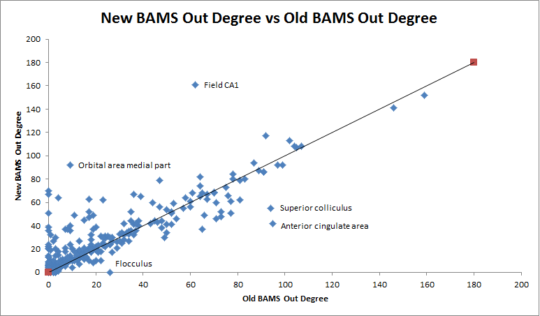
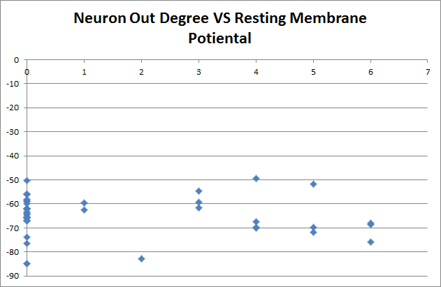
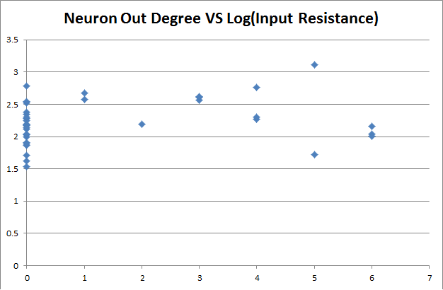

Exploring the relationship between Neuron Electrophysiological Properties and Connectivity
Garvin Pang
Prelude
Shreejoy's work
Shreejoy's Work
Leon's Work
Studied the relationship between gene expression and brain region connectivity
Utilized the BAMS data base for brain connectivity in his work
Introduction to data set
We used three different data set for this project
Each data set uses a different atlas/ different brain region naming scheme
Project Overview
Create mapping from each atlas to another
Generate connectivity matrices from Old BAMS and new BAMS data set
Create a neuron connectivity matrix based on Shreejoy's neuron to brain region mapping and BAMS' connectivity matrix
Determine if a correlation exist between neuron connectivity and their electrophysiological properties
Mapping
#First check for perfect matches
if(Levenshtein.ratio(line,bLine)==1):
#Find the most likely match
elif(Levenshtein.ratio(line,bLine)>X):
#Print out matches in different category
if(X==1):
perMap.write(curMaxS+'\n')
elif(X>0.9):
goodEnoughMap.write(str(curMaxS)+ '\t'+str(curMaxB)+'\n');
elif(re.search(pattern,str(curMaxS))and X>0.7):
layerMap.write(curMaxS+'\t'+curMaxB+'\n'+str(X)+'\n\n')
else:
partMap.write("Shreejoy: "+curMaxS+ "\nBAM: "+curMaxB+"\nDistance: "+str(X)+"\n\n")
Mapping Progress
Brain Region Connectivity Matrix
Old BAMS
Old BAMS data were in XML format
Data was binary (connection exist or not)
Brain Region Connectivity Matrix
New BAMS
Data was provided my Mihail Bota directly in form of a excel file
Source regions in one column, target in another
Projection strength was provided
Brain Region Connectivity Matrix
Generate Brain Region Connectivity Matrix for Old BAMS data
Completed
Generate Neuron Connectivity Matrix for New BAMS data
Completed
Neuron Connectivity Matrix
Generate Neuron Connectivity Matrix for Old BAMS data
Completed
Generate Neuron Connectivity Matrix for New BAMS data
Mapping from Allen Brain Atlas required
Data Analysis

Data Analysis


r= -0.07 p=0.6619
r= 0.22 p=0.1644
Improvements and Future Work
Use new BAMS data for analysis
Slightly less sparse data set
Perform the Mantel test
Acknowledgement
Shreejoy, Paul
and Rest of the lab
For your support and mentorship